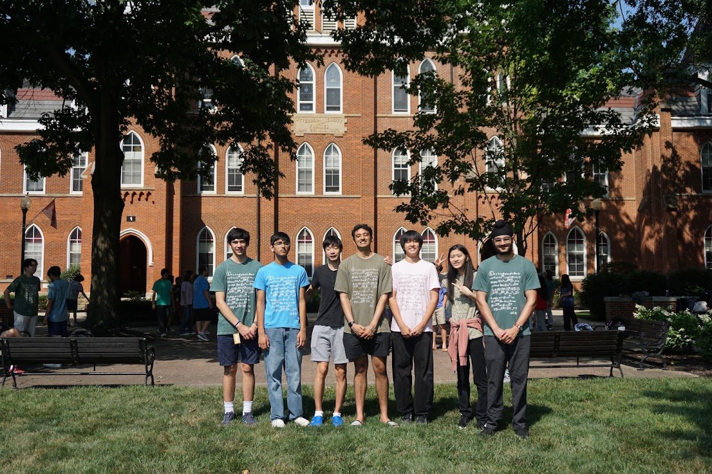
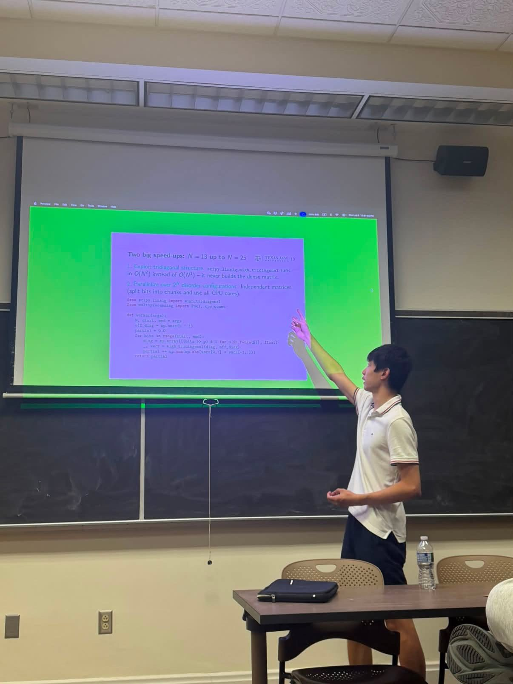
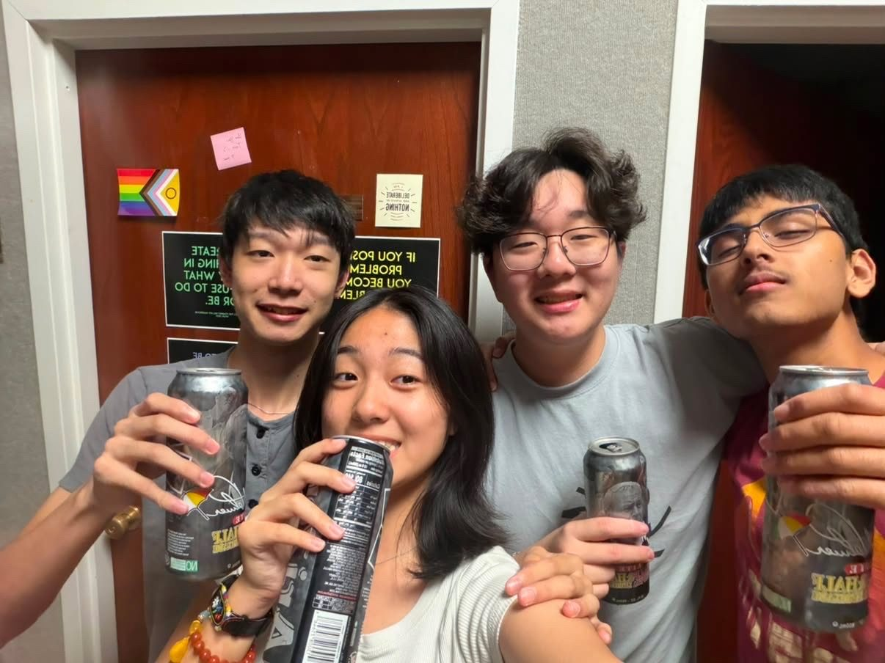

My summer at Ross
I spent summer 2026 at the Ross Mathematics Program, six weeks of doing number theory the hard and honest way: you’re handed almost nothing and asked to rebuild it, explore, conjecture, and prove, one problem set at a time.
To most of my friends back at home, the experience sounded miserable. Six weeks of pure math was, to anyone, an intense, daunting experience. For me, this was an exciting opportunity to meet people that valued and cared about the same things as me. Little did I know how much I suffered that first week.
Math at the Ross Math Program was introduced in a completely different light. Far from usual, math wasn't handed to us anymore. The obvious was, all of a sudden, the not-so-obvious, and we were tasked with justifying the seemingly obvious.

The daily rhythm was defined by the mandatory morning lecture and problem sets full of challenges as never seen before, and the arguments they forced you to get exactly right, with no gaps. The photo above is that spirit in one image: a proof by least counterexample that there is no integer strictly between 0 and 1, the kind of foundation Ross makes you rebuild before you’re allowed to trust it.
Then in the afternoon, there were various advanced lectures: distributions, group theory, elliptic curves, topology, representation theory, and many more other topics.
First-years at the Program were sorted into groups known as families, mine being Family 5. Our family meetings were in the evening, where we'd discuss topology, group/field theory, and Galois theory. Of course, that was also the time where we checked in how the day went and how our problem sets were.

Towards the end of the camp, when things became more flexible, we were allowed to present some things we find interesting and our current research, which was good practice for me and a great opportunity to hear from my peers different styles and techniques of a research-like presentation.

The first week was brutal. I wasn't used to the rigor at all. Being someone that hasn't ever received a redo, I was overwhelmed by the 20 redos I received on my first problem-set. I'd assumed things that I shouldn't have, and my proofs also took many properties for granted. (For your experience, I won't spoil the content of the Ross program)
But I managed to get used to it. I got used to the rhythm, the rigor, the things that looked obvious on the surface but needed justification. But it's also thanks to the people I met.
The people I met at the camp were amazing. Spending upwards of 18 hours a day with them was the closest I've ever been with anyone, and for six weeks, the connection we built with each other was super tight.

My friends made the program wonderful. Day in, day out, we collaborated along problem sets, learned from each other, taught and presented with each other. We laughed, played games, watched movies, played sports, attended lectures, and pulled all nighters together.

But maybe most importantly, we watched the world cup together, as well as organizing our own Ross World Cup. My friends' and my family combined families, and together we won the first ever Ross World Cup, with me scoring a hattrick in the final :]
"Little did I know how much I would suffer the first week. Little did I know that the remaining five would become the best weeks of my life."